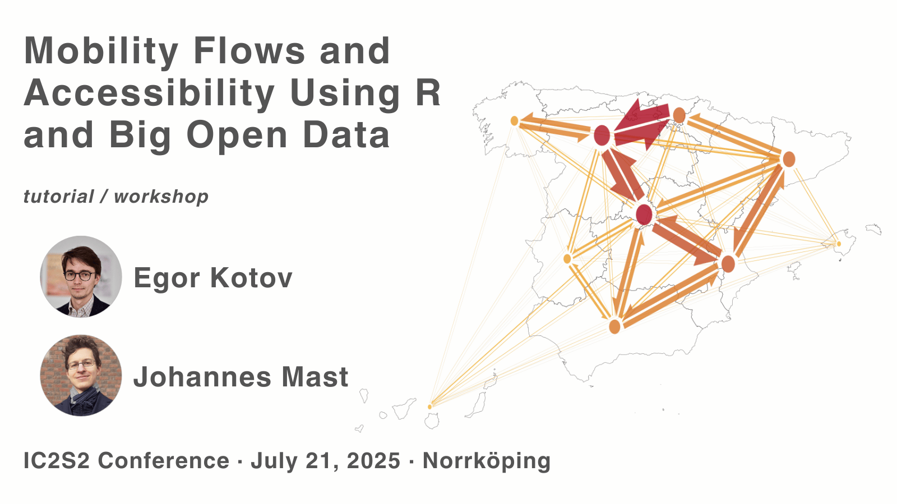

👋 Workshop Introduction
![]()

This website provides supporting materials for the workshop Mobility Flows and Accessibility Using R and Big Open Data which is part of the 11th International Conference on Computational Social Science held in Norrköping, Sweden on July 21-24, 2025. This tutorial is licensed under CC BY SA 4.0.
Large-scale human mobility datasets provide unprecedented opportunities to analyze movement patterns, generating critical insights for many fields of research. Until recently, access to human mobility data was a privilege of a few researchers. Thanks to countries like Spain that pioneered to make high resolution aggregated human mobility data open, such data is becoming increasingly accessible, and similar mobility data may soon be widely available as part of official statistics across the European Union (thanks to the Multi-MNO project). However, the complexity and sheer volume of this data present practical challenges related to data acquisition, efficient processing, geographic disaggregation, network representation, and interactive visualization.
The workshop addresses these challenges by showcasing end-to-end workflows that harness state-of-the-art R packages and methods. Participants will learn how to acquire and manage multi-gigabyte mobility datasets on consumer level laptops, combine and compare the actual mobility flows and the access to opportunities, and create informative mobility flows visualizations.
Spanish open mobility data is used as a case study. This data contains anonymized and grouped flows between more than 3500 locations in Spain with hourly intervals across 3 full years. Thanks to the inclusion of several demographic variables, this data presents a universe of opportunities for analysis and research questions to explore.
Workshop participants will use {spanishoddata} R package (Kotov, Lovelace, and Vidal-Tortosa 2024) to access open human mobilty flows (Ministerio de Transportes y Movilidad Sostenible (MITMS) 2024) derived from mobile phones in Spain. They will analyse the data using cutting edge {duckdb} (Mühleisen and Raasveldt 2024) and make static and interactive visualisations with {flowmapper} (Mast 2024), {flowmapblue} (Boyandin 2024).
Stay tuned for updates!
Projected Timeline
| Activity | Time |
|---|---|
1. Getting the Open Human Mobility Data in a Reproducible Way using spanishoddata and aggregating the data using duckdb |
13:30 - |
2. Visualization of Mobility Flows Using flowmapper and flowmapblue |
|
| Official Coffee Break | 15:00 — 15:30 |
| 3. Accessibility and its Relation to Actual Mobility | – 17:00 |
References
Citation
@online{kotov2025,
author = {Kotov, Egor and Mast, Johannes},
title = {IC2S2 2025 {Workshop:} {Mobility} {Flows} and {Accessibility}
{Using} {R} and {Big} {Open} {Data}},
date = {2025-07-21},
url = {https://e-kotov.github.io/spanish-open-mobility-workshop-ic2s2-2025/},
doi = {10.5281/zenodo.16238597},
langid = {en}
}